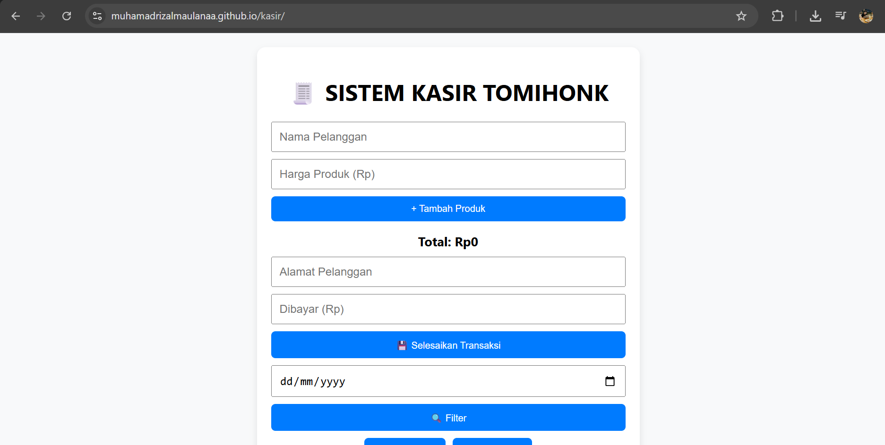
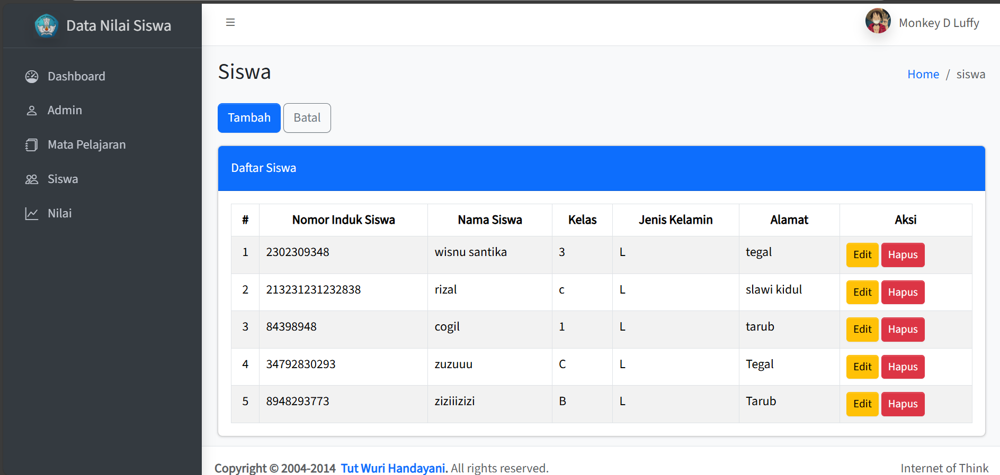

💻 Proyek Saya
Berikut adalah beberapa proyek yang pernah saya kerjakan. Semua bersifat responsif dan siap produksi.

Aplikasi Kasir WiFi
Aplikasi berbasis Laravel dan Vue untuk mengelola transaksi pelanggan WiFi.
🔗 Lihat di GitHub

Manajemen Nilai Siswa
Aplikasi berbasis CodeIgniter 3 untuk input, edit, dan rekap nilai siswa oleh guru.
🔗 Lihat di GitHub
Object Detection Notebook
Notebook Python untuk mendeteksi objek menggunakan OpenCV dan YOLOv8s. Berjalan di Jupyter Notebook dengan output video real-time.
🔗 Lihat di GitHub